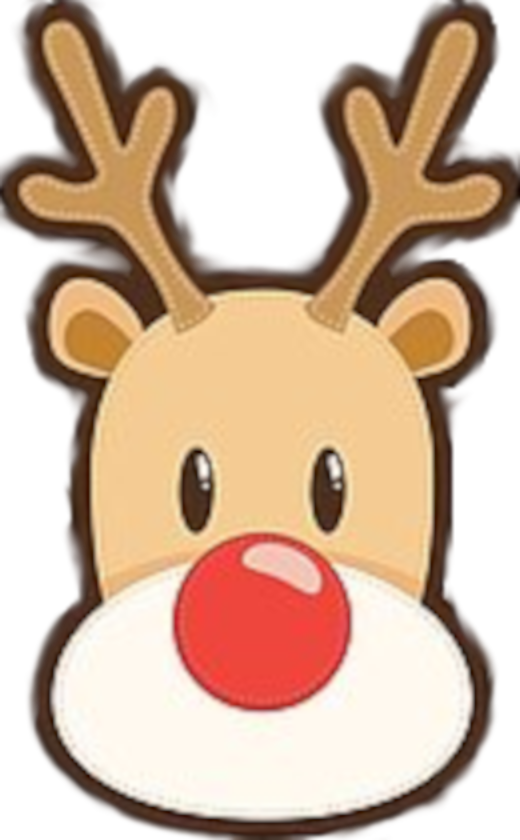

På Nordpolen är Rudolf och de andra
renarna redo att susa iväg med släden
så tomten kan fixa klapp-missen
Bengt och Lotta tar fram
allt julpynt och Lill-Sixten
kommer och hjälper
till att klä granen
"Kom in på fika för all del" säger Rogers
kusin Torsten när de går förbi hans hus
just som Tomten blir klar med
att dela ut de tappade paketen
De har en trevlig fika innan
de går tillbaka till hotellet
lagom tills granen är färdigpyntad
"Kolla, det blev världens
finaste gran!" ropar Lill-Sixten
och alla håller med!
Även Gräddnos
"Åh, nej" suckar Roger
"Vad gör du, Gräddnos?"
Lill-Sixten fnissar.
Sedan går alla och
firar jul tillsammans!
Rudolf vinkar och önskar
god jul och god fortsättning!
